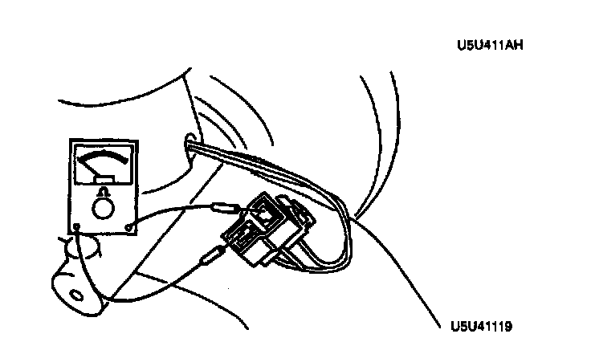

Brake Fluid Pressure Sensor/Switch: Testing and Inspection
1. Disconnect the sensor connector.
2. Connect an ohmmeter to the connector.
3. Starting with the fluid level above the MIN mark on the reservoir, verify that there is no continuity.
4. Remove the brake fluid and verify continuity when the level is below the MIN mark.
5. Replace the sensor as necessary.